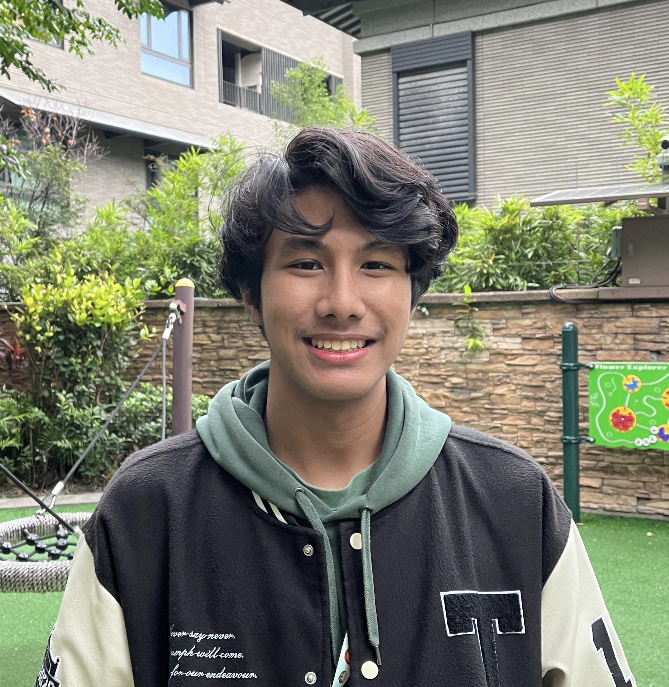
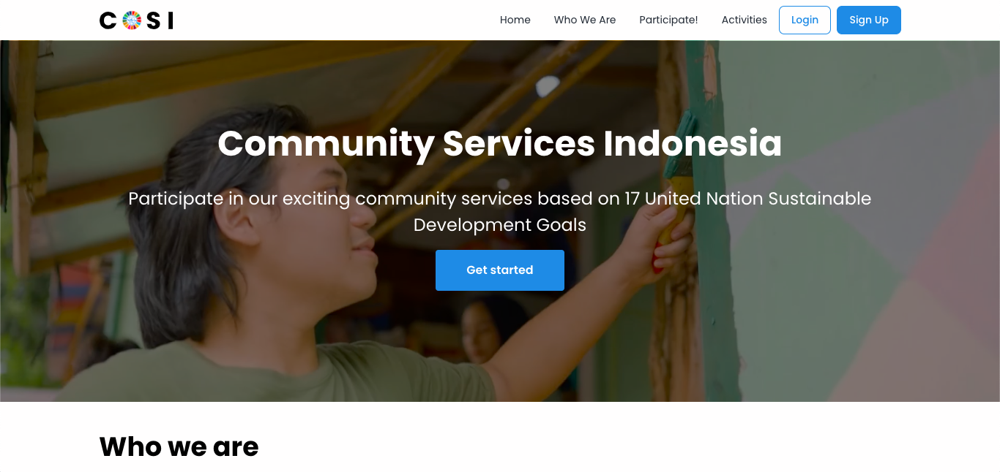
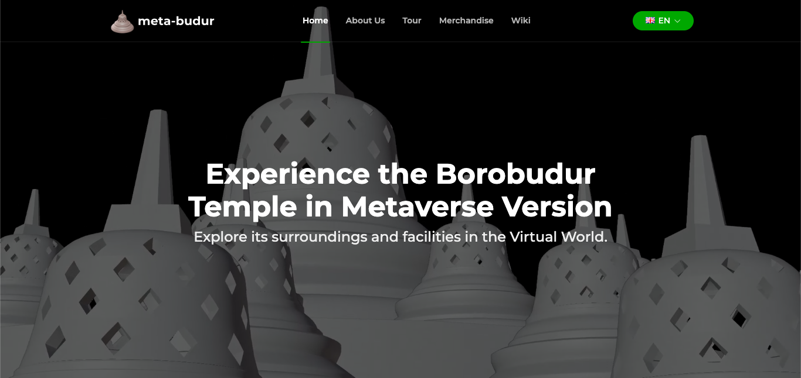
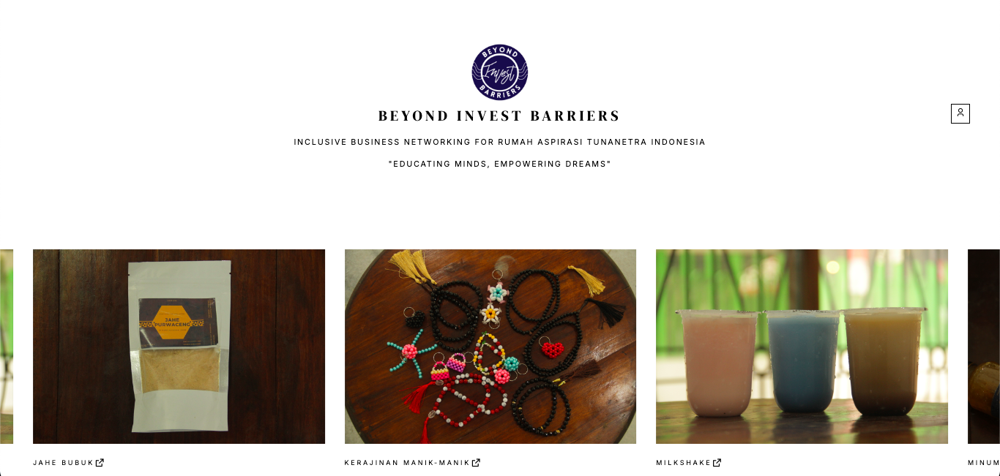
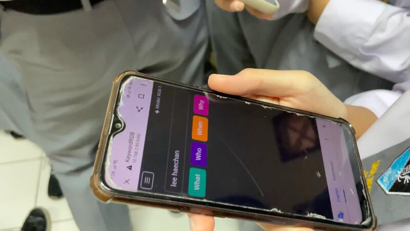

Currently pursuing an undergraduate degree in Computer Science at the Faculty of Computer Science, with a strong interest in software engineering, digital products, and impact-driven technology.
Computer Science Student @ Fasilkom Universitas Indonesia

I’m a Computer Science student at Universitas Indonesia who enjoys building digital products that are useful, clear, and impactful.
Education
My learning journey has been shaped by strong academic environments, leadership experiences, and a growing focus on computer science and technology.
Currently pursuing an undergraduate degree in Computer Science at the Faculty of Computer Science, with a strong interest in software engineering, digital products, and impact-driven technology.
Built a strong academic foundation in science while actively participating in STEM activities, competitions, and student initiatives that strengthened both leadership and technical curiosity.

The early stage of my academic journey, where I developed discipline, curiosity, and learning habits that later supported my growth in science and technology.
Experience
Campus Ambassador and Student Representative
Programming Foundations 2 (Java)
Student Leadership and Coordination
AI-based Educational Web Product
Stack
A visual snapshot of the tools and technologies I use across programming, web development, and workflow.
HTML
CSS
JavaScript
Java
Python
Dart
C++
Bootstrap
Tailwind
Django
Ubuntu
GitHub

An information mediator website for community service opportunities in Indonesia, organized by SDGs categories and designed to connect volunteers with social initiatives.
Role: Frontend / Web Development

This web is the combination of Borobudur Temple local wisdom with virtual world in the form of a Metaverse and act as sales intermediatery for local UMKM businesses.
Role: Frontend / Web Development

On Indonesia Maju Scholarship Social Project Batch 4, i got a volunteer offer as Web Developer for Beyond Invest Barriers. The web act as an intermediary inclusive business networking for Rumah Aspirasi Tunanetra (person with vision impairment) Indonesia.
Role: Frontend / Web Development

During Solve for Tomorrow competition, our team RGB (Rivaldy Putra Rivly, Neal Guarddin, Bhisma Sutan Danusiri) found that students and teachers need an education platform through the use of Artificial Intelligence (AI) and gamification
Role: Web Development (Backend + Frontend)
Acknowledgements
Led the team and built an AI-based educational product that ranked 2nd among 309 school teams.
Featured on Samsung’s official channels as one of the selected STEM youth representatives.
Graduated as one of the outstanding students and ranked in the top 10 of the science specialization program.
Received intellectual property protection from DGIP/Ministry of Law and Human Rights Indonesia for the innovation developed in the competition project.